Home
post4ytb@gmail.com
Graphical luxmeter LG09
USB
Features
of the luxmeter LG09 USB
- ability to record and reproduce as a graph
periodic
light pulse sequences and single light pulses,
which allows measuring the parameters and shape
of signals from such light sources as rescue beacons,
signal flares, pyrotechnic products;
- ability to perform 490 measurements once a second (or less frequently),
calculate the average value from their results and plot it on a graph,
which allows observing slowly changing light processes,
for example, evaluating the change in workplace illumination during
the day. Such measurements can be accompanied by plotting the temperature
(luxmeter LG09T USB)
- if necessary, the luxmeter LG09
USB
can be supplemented with a function of issuing a control signal for
switching on/off depending on the level of illumination, temperature (luxmeter
LG09T USB -
this will make it easy to organize
thermostating).
8 ranges, a recording duration of up to 5s at a sampling frequency of 8.25kHz, the ability to calculate the average value
of light signals and plot the calculated values once a
second or less frequently, as well as
the ability to measure and plot temperature provide the USB luxmeter
LG09
with a wide range of applications.
is designed on a photodiode with high
sensitivity, the light-sensitive
surface is 10mm in diameter,
Parameters
of the luxmeter LG09 USB
-special light filters are used,
the spectral sensitivity of the photodiode-light filter pair
of the luxmeter
matches the spectral sensitivity of
the human eye,
-8 measurement ranges of the luxmeter,
the scale of the most sensitive: 0..0.5lx (0..5000x10-4lx),
the least sensitive 0..5000000lx (0..5000x10+3lx),
-automatic selection of the luxmeter measurement ranges
(x10-4, x10-3, ..., x10+3lx),
-possibility of manual selection of the luxmeter measurement limits,
-the signal sampling frequency by the luxmeter analog-to-digital
converter is 8.25kHz,
-the number of samples performed by the luxmeter
during one measurement and displayed as a
graph on the computer display is up to 32767 samples
-display of MINIMUM, MAXIMUM, AVERAGE value,
and the signal RIPPLE FACTOR
-possibility to increase the duration
of a single measurement by the luxmeter
by programmatically decreasing the sampling frequency by
2...255 times

Luxmeter with a head with
frosted glass, nozzle nearby
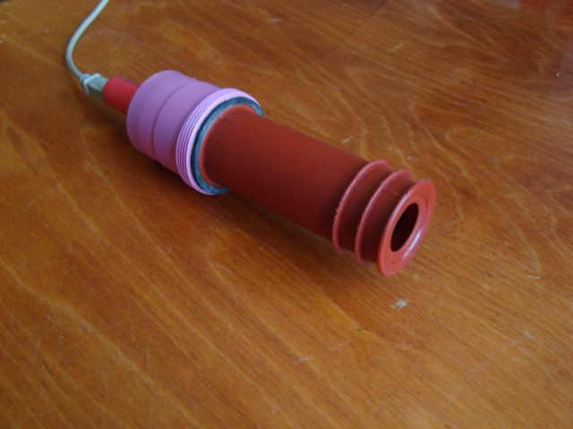
Luxmeter with a head with frosted
glass and installed nozzle
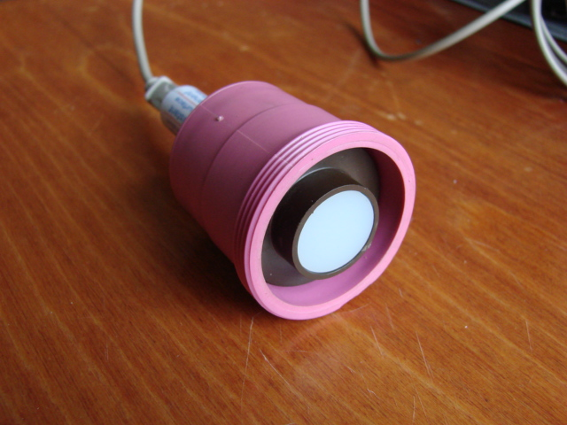
Luxmeter with a head with frosted
glass
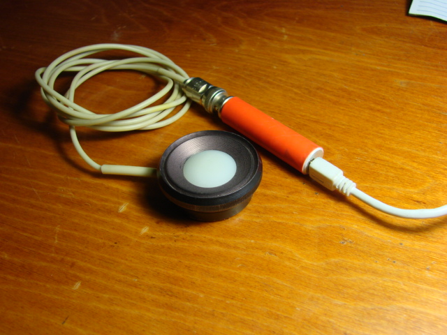
Luxmeter with remote head
Graphs of pulse
signals
recorded by the luxmeter - allow evaluating the steepness of pulse
edges and falls, and the ability of the luxmeter to record signals of
different frequencies.
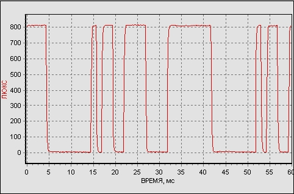
Repeating sequence: one period of each frequency 400, 200, 100
and 50Hz
The source of test light pulse sequences is an LED controlled by a microcontroller.
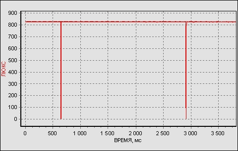
LED lamp switching off once every 2.7s
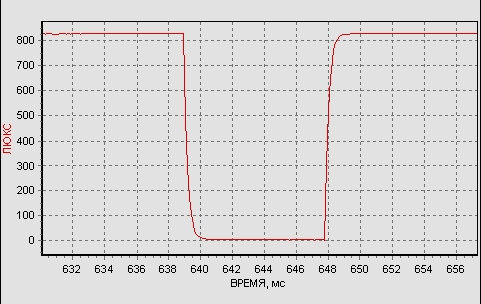
Fragment of the same graph - LED lamp switching off for 8.9milliseconds
The LG09 luxmeter has wider capabilities for recording signals than the LG05 luxmeter, so the LG09 luxmeter can record the same light signals that the LG05 luxmeter is capable of registering.
With the transition to LED lighting, measuring the ripple of light sources has become particularly relevant.
While the ripple of incandescent and energy-saving lamps met the
requirements of SNiP and differed little among lamps from different
manufacturers, LED lamps, including those "from Europe", often turn out
to be unsuitable for lighting workplaces and rest areas due to their
ripple level.
And using lamps with a high level of ripple to illuminate rotating
objects is generally hazardous - due to the stroboscopic effect, for
example, a rotating machine spindle may appear stationary.
The illumination ripple factor is calculated by the formula: Kp
= (Emax. - Emin.) / (2 x Eavg.),
where Emax, Emin., Eavg. are the maximum, minimum, and average values of illumination.
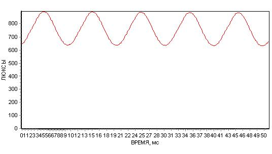
Incandescent lamps
have thermal inertia; when the supplying AC voltage passes through zero,
the filament does not have enough time to cool down significantly, so the lamp brightness drops
only slightly.
Kp=0.17, ripple frequency
Fp=100Hz (this is double the 50Hz 220V mains frequency - the supplying AC
voltage reaches zero twice per period)
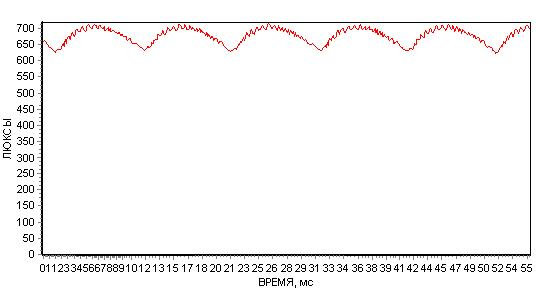
For the energy-saving
lamp Philips 14W, Kp=0.067, Fp=100Hz
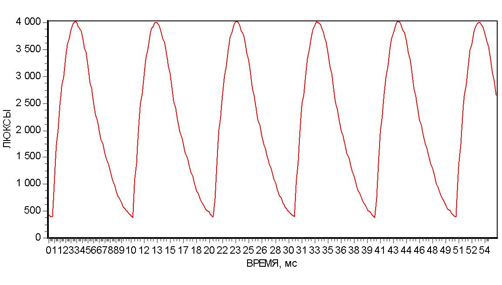
LED
lamps
have low inertia. If the manufacturer saved on
the lamp driver components, the same 100 Hz ripple turns out to be
huge - when the supplying AC voltage passes through zero,
the current through the LEDs becomes zero and the LEDs manage
to turn off.
LED
lamp
220V 8W with standard E27 socket, manufacturer unknown.
Kp=0.82, Fp=100Hz
The next pair of Civilight LED
lamps
was presented at the "Control and Measurement Instruments, Electronics, Power Engineering" exhibition. The owner
claimed that the lamps comply with European requirements and were brought
from Europe.
However, the website http://ru.civilight.com
is Chinese.
Interestingly,
both 220V 4W lamps have completely different patterns and levels
of ripple. Measurements for this pair of lamps were performed at the same
distance with identical external illumination.
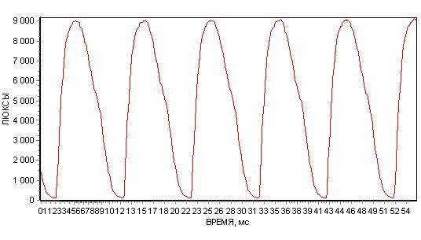
LED lamp
Civilight with cold white glow, 220V 4W, Kp=0.93, Fp=100Hz
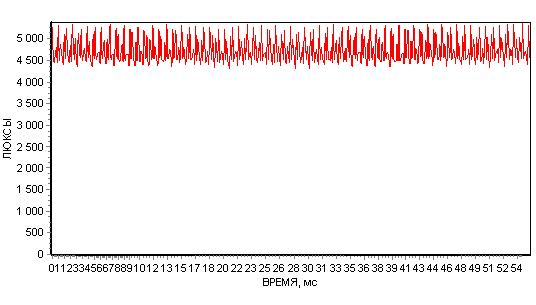
LED
lamp
Civilight with warm white glow, 220V 4W, Kp=0.11, Fp=3500Hz - it is considered
that at a frequency above 300 Hz, ripples are not perceived by the brain and do not
lead to human fatigue.
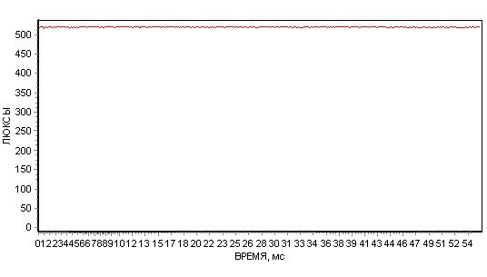
If desired, ripple-free LED lighting can be provided:
LED strip
powered by an AC-DC converter with an output voltage of +12V.
One of the articles about ripples on the website of the Research
Institute of OCCUPATIONAL SAFETY in Ivanovo:
Ilyina E.I., Chastukhina T.N., "WHY
MEASURES ARE NOT TAKEN TO REDUCE LIGHTING RIPPLE"